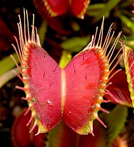
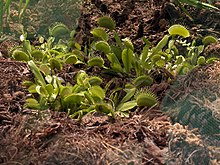
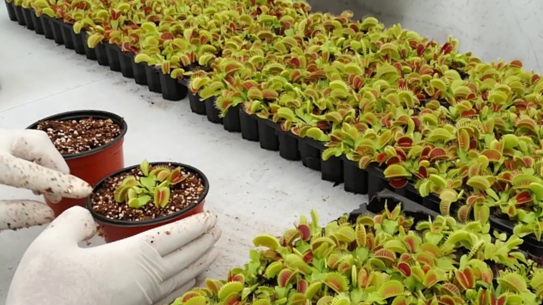
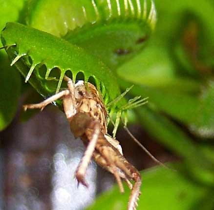
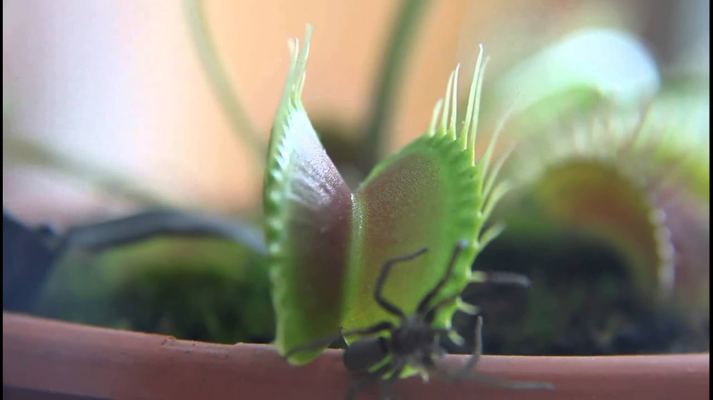
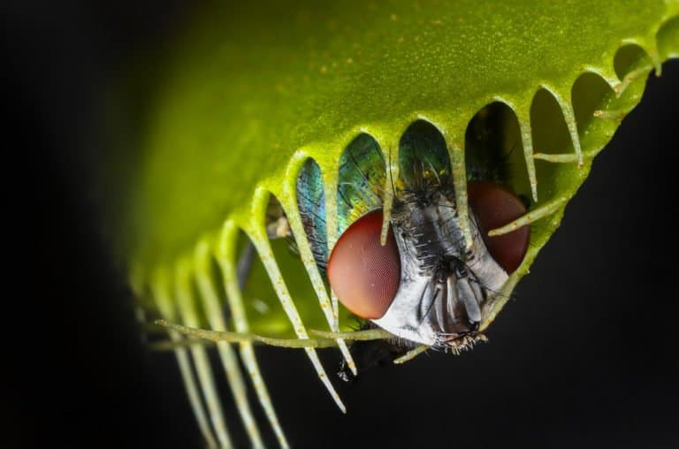
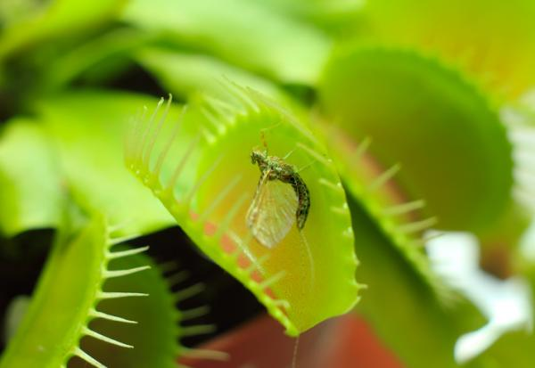
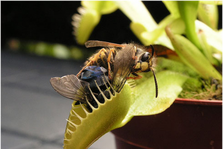

Venus atrapamoscas
Este articulo es sobre la planta todo lo inclido aqui puede ser verdad o no, el objetivo de esto esto es que 4 chicos suban su promedio para asistir ala univercidad
El atrapamoscas de Venus ( Dionaea muscipula ) es una planta carnivora nativa de humedales subtropicales en la costa este de los Estados Unidos en Carolina del Norte y Carolina del Sur . Atrapa a su presa, principalmente insectos y aracnidos, con una estructura de atrapamiento formada por la parte terminal de cada una de las hojas de la planta, que se desencadena por diminutos pelos (llamados "pelos de disparo" o "pelos sensibles") en su interior Superficies
Cuando un insecto o una mosca que se acerca a lo largo de las hojas entra en contacto con un cabello, la trampa se prepara para cerrarse, cerrandose de golpe solo si ocurre otro contacto dentro de aproximadamente veinte segundos del primer golpe. Se pueden producir disparos si una decima parte del insecto esta en contacto. El requisito de activacion redundante en este mecanismo sirve como una proteccion contra el desperdicio de energia al atrapar objetos sin valor nutricional, y la planta solo comenzara la digestion despues de cinco estimulos mas para garantizar que haya detectado un insecto vivo digno de consumo.
Dionaea es un genero monotipico estrechamente relacionado con la planta de la rueda hidraulica ( Aldrovanda vesiculosa ) y las arrugas solares ( Drosera ), todas las cuales pertenecen a la familia Droseraceae .
Te puede interesar
Descripción.
habitat
cultivos
Conservación
Descripción
En 1760, el gobernador colonial de Carolina del Norte , Arthur Dobbs , escribió la primera descripción escrita de la planta en una carta al botánico inglés Peter Collinson . Estaba fechado en Brunswick, el 24 de enero de 1760.
La gran maravilla del reino vegetal es una especie muy curiosa y desconocida de Sensitive. Es una planta enana. Las hojas son como un segmento estrecho de una esfera, que consta de dos partes, como la tapa de un bolso de primavera, la parte cóncava hacia el exterior, cada una de las cuales cae con bordes indentados (como una trampa de zorro de hierro); sobre cualquier cosa que toque las hojas, o cayendo entre ellas, se cierran instantáneamente como una trampa de resortes, y confinan cualquier insecto o cualquier cosa que caiga entre ellas. Lleva una flor blanca. A esta sorprendente planta le he dado el nombre de Fly trap Sensitive.

Habitat
El atrapamoscas de Venus se encuentra en ambientes pobres en nitrógeno y en fósforo, como los pantanos y las sabanas húmedas. De estatura pequeña y crecimiento lento, la trampa de Venus tolera bien el fuego y depende de la quema periódica para suprimir su competencia. [34] La supresión de incendios amenaza su futuro en la naturaleza. [35] Sobrevive en suelos húmedos arenosos y turbosos. A pesar de que se ha trasplantado y cultivado con éxito en muchos lugares del mundo, solo es nativo de los pantanos costeros de Carolina del Norte y del Sur en los Estados Unidos, específicamente dentro de un radio de 100 kilómetros (60 millas) de Wilmington, Carolina del Norte . [36] Uno de esos lugares es el pantano verde de Carolina del Norte. También parece haber una población naturalizada de trampas para moscas Venus en el norte de Florida , así como una población introducida en el oeste de Washington .La pobreza nutricional del suelo es la razón por la cual la planta se basa en trampas tan elaboradas: las presas de insectos proporcionan el nitrógeno para la formación de proteínas que el suelo no puede. El atrapamoscas de Venus no es una planta tropical y puede tolerar inviernos suaves. De hecho, las trampas para pájaros de Venus que no pasan por un período de inactividad invernal se debilitarán y morirán después de un período de tiempo.

cultivos
Las plantas se pueden propagar por semilla, demorando entre cuatro y cinco años en alcanzar la madurez. Más comúnmente, se propagan por división clonal en primavera o verano. Las trampas para moscas de Venus también pueden propagarse in vitro utilizando cultivos de tejidos vegetales. La mayoría de las trampas para pájaros de Venus que se encuentran a la venta en centros de jardinería de viveros se han producido utilizando este método, ya que es la forma más rentable de propagarlas a gran escala. Independientemente del método de propagación utilizado, las plantas vivirán entre 20 y 30 años si se cultivan en las condiciones adecuadas.

Conservación
La especie está clasificada como "vulnerable" por la Federación Nacional de Vida Silvestre . En 2015, se estimó que había menos de 33,000 plantas en el medio silvestre, todas dentro de 75 millas (121 km) de la ciudad de Wilmington, Carolina del Norte, y todas en sitios propiedad de The Nature Conservancy , el estado de Carolina del Norte gobierno, o el ejército de Estados Unidos.
En 2014, el estado de Carolina del Norte aprobó el Proyecto de Ley Senatorial 734, que clasifica el robo de las trampas para pájaros Venus que crecen naturalmente en el estado como un delito grave. Las sanciones más severas y las sanciones por robo también se promulgaron el 1 de diciembre de 2014 de conformidad con la legislación.

Tabla de mejores alimentos
| Nombre | foto | funcion | donde encontrarlo/@ |
| arañas | 
| alimentar ala planta | jardin/bosques |
| moscas |  | alimentar ala planta | basureros |
| mosquitos |  | alimentar ala planta | panthanos |
| abejas |  | alimentar ala planta | jardin |
alumnos del proyectos
Orlando de jesus Arango Ruiz
Carlos Eduardo Inocencio Hernandez
Jesus Ignacio Guzman Cruz
Hector Arturo Zarate Hernandez